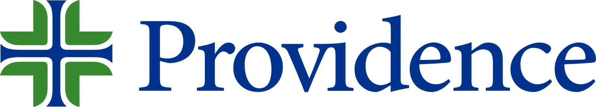

Microsoft × Providence

A central home for the materials, recaps, and prototypes we're sharing as we explore the Enterprise Application Value Inversion at Providence. New resources will be added here as our work together progresses, so bookmark this page and check back.
Use this page as the front door for current and future artifacts related to the enterprise application value inversion, AI Business Applications TAM, and platform consolidation economics for Providence.
Interactive executive decision canvas walking the strategic argument, Providence's own $252.1M TAM and savings model, the Microsoft IQ platform approach, and a practical next step.
Open resource →Concise summaries, decisions, and follow-up actions from working sessions and executive conversations.
To be addedShort walkthroughs of the Microsoft IQ platform and embedded AI patterns relevant to Providence.
To be added